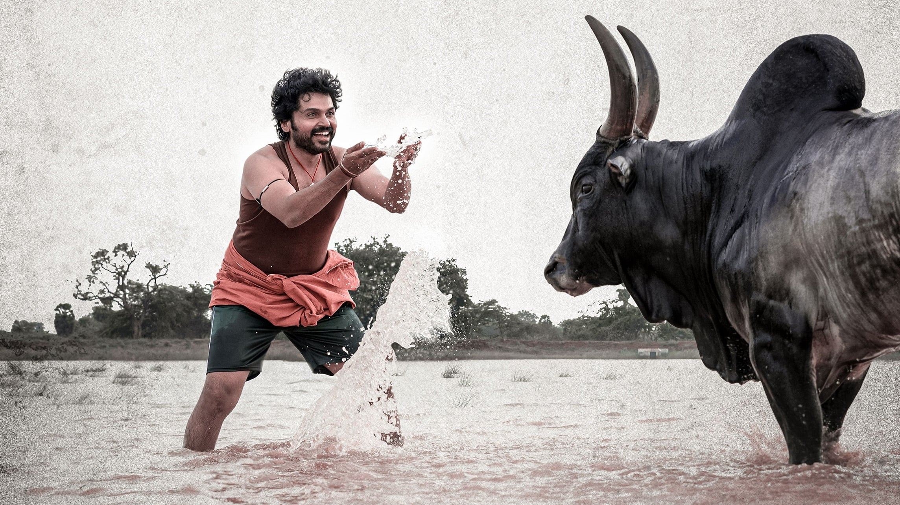
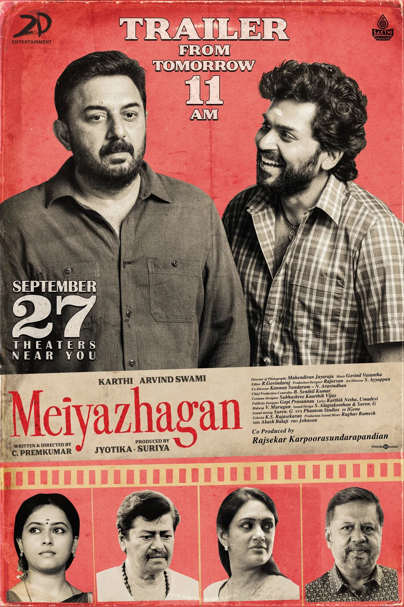

மெய்அழகன்

"Meiyalagan" is an emotionally intense film that powerfully portrays love, social justice, and the urgent need for change in a deeply impactful way.
மெய்அழகன் திரைப்படம் தற்போது தமிழ் சினிமாவில் காட்சியளிக்கும் அடையாள விரிவையும், உளஉணர்வு நுட்பங்களையும் புதிய பரிமாணத்தில் உரைக்கின்ற ஒரு திறமையான சோதனையாக திகழ்கிறது; எளிய கதைக்களத்துக்குள்ளேயே மிக ஆழமான மனோதத்துவங்கள், சமூக விமர்சனங்கள் மற்றும் மனித ஒழுக்க நெறிகள் பற்றிய கேள்விகளை எழுப்பும் இந்த திரைப்படம், ஒரு சினிமாவைத் தாண்டி, வாழ்க்கையை அறிந்துகொள்ளும் அற்புத அனுபவமாக அமைந்திருக்கிறது. கதையின் மையத்தில் இருப்பவர், சாமான்யமான பண்புகளைக் கொண்ட ஒரு மனிதர் – சமூக பார்வைகளில் மிகவும் சாதாரணம், ஆனால் உள்ளார்ந்த உணர்ச்சிகள், தர்ம உணர்வு மற்றும் மனித நேயத்தால் நிரம்பியவர்; இவரது வாழ்க்கையை வழிமொழியாகக் கொண்டு இயக்குநர் சமூகத்தின் வெளியரங்க பேதங்களை, அதன் இரண்டாம் நிலை உறவுகளை, நாமறிந்தது போல் தோன்றும் நல்லிணக்கங்களுக்குள் இருக்கும் இருண்ட பக்கங்களை, மிகவும் நுணுக்கமான சித்திரங்களைப் போல ஓவியமிடுகிறார். படத்தின் ஒவ்வொரு காட்சியிலும், இயற்கையோடு கலந்து போன ஒளிப்பதிவு, வெளிப்படையான உரையாடல்களின்மையின் மூலம் உருவாக்கப்படும் மௌன உரையாடல்கள், பின்னணி இசையின் அமைதியான அதிர்வுகள் ஆகியவை பார்வையாளரை ஆழமான உளவியல் அனுபவத்திற்கு அழைத்துச் செல்கின்றன. மெய்அழகனின் பாத்திரம், அன்றாட வாழ்வின் தொலைநோக்குப் பார்வையற்ற பரிதாபங்களை பிரதிபலிப்பதுடன், \"அழகு\" என்ற சொல்லின் பொருளை மீளாய்வு செய்ய வைக்கிறது – அதன் மேல் தோற்றத்தையும், உள் ஒளியையும் சமமனோபாவத்துடன் பார்வையிட வைக்கிறது. இந்த திரைப்படத்தில் எந்தவொரு கட்டாயமான பரிதாப உணர்வுகளும் இல்லை; பதற்றமூட்டும் திருப்பங்கள், கைவிடும் காட்சிகள், மெய்ஞ்ஞான பேச்சுக்கள் – இவை யாவும் இல்லாமல் இருந்தாலும், வாழ்க்கையின் தத்துவங்களை மிக எளிமையாக ஆனால் ஆழமாக சொல்லும் திறமை நிரம்பி உள்ளது. கதையின் நாயகனானவர் சமூக ஒதுக்குதலையும், காதலில் தோல்வியையும், குடும்பத்தில் உள்ள இடர்பாடுகளையும் சமமனோபாவத்துடன் எதிர்கொள்கிறார்; ஆனால் அதே நேரத்தில் தன்னுடைய உள் உணர்வுகளைத் தூய்மையாய் வைத்துக்கொள்கிறார் – அவனது பேசாத நேரங்களும், சிரிக்காத முகமும், குற்றம்சாட்டாத பார்வையும் திரையில் நீண்ட நேரம் நிலைத்து நின்றாலும், அவை எல்லாம் வெறும் மௌனங்கள் அல்ல, அவை ஒரே நேரத்தில் பலதரப்பட்ட உணர்வுகளை சுமக்கும் நுட்ப வெளிப்பாடுகள்

இப்படம் கூறும் முக்கியமான ஒன்று \"வாழ்க்கை என்பது வெற்றிகளால் அல்ல, ஒவ்வொரு தோல்வியையும் அனுபவித்து வாழ்ந்த உளபெருக்கத்தால் அழகு பெறுகிறது\" என்ற கருத்தாகும். நடிகரின் நடிப்பு, குறிப்பாக பார்வையின் நடிப்பு, மிகப்பெரிய பாராட்டுக்குரியது; மிகக் குறைந்த வாக்கியங்களிலும், மிக அதிகமான உணர்வுகளை வெளிப்படுத்தும் திறமை திரைபட கலைக்கே ஒரு பாடமாக அமைகிறது. திரைக்கதையின் அமைப்பும், அதற்கேற்ப இசையின் ஒத்துழைப்பும், ஒளிப்பதிவின் இயற்கையான சாயலும் படத்தின் கலாசார அடையாளங்களை வலுப்படுத்துகின்றன. இயக்குநரின் பார்வை முழுமையாக உள்ளுணர்வில் பிரதிபலிக்கிறது; இங்கு அவர் எதையும் விரைந்து சொல்லவில்லை – அவர் விரைவில் உணர்வுகளை நம் மீது தூக்கவில்லை; பதிலாக, பார்வையாளர்கள் தாமாகவே அந்த உணர்வுகளுக்குள் புகுந்து, அவற்றை உள்வாங்கும் வாய்ப்பை வழங்குகிறார். இது ஒரு திறமையான இயக்குநரின் அடையாளமாகவும், தமிழ் சினிமாவின் உள்ளடக்க ஆழத்தை மீண்டும் நிரூபிப்பதாகவும் பார்க்கலாம். சமூக விமர்சனமும், மனிதநேயம் மையமாகவும் அமைந்துள்ள இந்தப் படத்தில், காதலும் ஒன்று, குடும்பமும் ஒன்று, தனிமையும் ஒன்று – ஆனால் அனைத்தும் ஒரே ஒருவரின் உள் வெளிச்சத்தால் இணைக்கப்பட்டிருப்பதை காண்கிறோம். அந்த உள் வெளிச்சமே, 'மெய்அழகன்' என அழைக்கப்படுவதை நாம் புரிந்து கொள்கிறோம். இந்த உணர்வுப் பயணம், சினிமா ரசிகர்களுக்கான ஒரு ஆன்மீக அனுபவமாகவும், இயல்பு வாழ்க்கையில் மனிதர்களை மீள்பார்க்க வைக்கும் மாற்றுப் பார்வையாகவும் அமைகிறது. தனிமையின் அமைதி, வெளிப்படையான மனித உறவுகளின் விசித்திரங்கள், நம்மைப் போல் எண்ணிக்கொள்ளும் ஒருவரின் உள் அழகு – இவை அனைத்தும் 2 மணி நேரம் நீளமுள்ள இந்தக் கலைப்படைப்பில் நிகழும் ஒரு மெல்லிய கவிதையை போல பாய்கின்றன. காட்சிகளைத் தொகுக்கும் முறையிலிருந்து, ஒவ்வொரு சின்ன விபரங்களுக்கும் ஆழமான கவனம் செலுத்தப்பட்டிருப்பதை நாம் உணர முடிகிறது. இது ஓர் “அனுபவப்படம்”; அதாவது பார்வையாளனாக இருக்கும் நம்மை ஒரு பாத்திரமாக மாற்றும் படைப்பு – நாமே அந்த மௌனங்களை உணர்வதற்கும், நாமே அந்த மெய்யழகனை பார்ப்பதற்கும் தயாராக வேண்டிய சினிமா. தமிழ் சினிமா எப்போதும் கதைகளை சொல்லும் பாவனையை மட்டுமல்லாமல், மனித உணர்வுகளின் ஆழத்தை விவாதிக்கவும் பயன்படுத்தப்பட வேண்டுமென்ற நோக்கத்தை இந்தப் படம் புதிய வடிவத்தில் நினைவூட்டுகிறது. மெய்அழகன், வெளி அழகிற்கு மாறாக உள்ளழகை கொண்டாடும் காட்சிகளின் தொடர்வைதான் அல்ல; இது நாம் மறந்து போன மனித தன்மையையும், சாதாரண மனிதரின் நுண்ணுணர்வுகளையும் மீண்டும் நினைவூட்டும் ஒளிக்கண்ணாடியாக திகழ்கிறது. எளிமையாக இருப்பதற்கே பெருமை வேண்டுமென்கிற இந்தக் கலைஞானப் பயணம், வாடும் மனங்களைத் தழுவும் ஒரு மென்மையான இசைப்போல் நம்மை அணைத்தெடுக்கிறது. இவை அனைத்தும் சேர்ந்து மெய்அழகன் என்ற படத்தை ஒரே நேரத்தில் மனதை நிறைக்கும் கலைப் படைப்பாகவும், சிந்தனையை தூண்டும் வாழ்க்கைப் பயணமாகவும் மாற்றுகிறது.